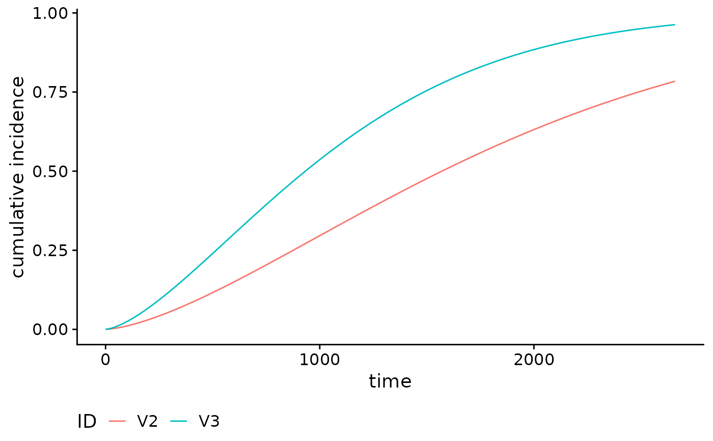

R/absoluteRisk-cr.R, R/absoluteRisk.R, R/methods.R, and 1 more
absoluteRisk.RdUsing the output of the function fitSmoothHazard, we can compute
absolute risks by integrating the fitted hazard function over a time period
and then converting this to an estimated survival for each individual.
Plot method for objects returned by the absoluteRisk
function. Current plot types are cumulative incidence and survival
functions.
absoluteRisk.CompRisk(
object,
time,
newdata,
method = c("numerical", "montecarlo"),
nsamp = 100,
onlyMain = TRUE,
type = c("CI", "survival"),
addZero = TRUE
)
absoluteRisk(
object,
time,
newdata,
method = c("numerical", "montecarlo"),
nsamp = 100,
s = c("lambda.1se", "lambda.min"),
onlyMain = TRUE,
type = c("CI", "survival"),
addZero = TRUE,
ntimes = 100,
...
)
# S3 method for absRiskCB
print(x, ...)
# S3 method for absRiskCB
plot(
x,
...,
xlab = "time",
ylab = ifelse(attr(x, "type") == "CI", "cumulative incidence", "survival probability"),
type = "l",
gg = TRUE,
id.names,
legend.title
)Output of function fitSmoothHazard.
A vector of time points at which we should compute the absolute risks.
Optionally, a data frame in which to look for variables with
which to predict. If omitted, the mean absolute risk is returned.
Alternatively, if newdata = "typical", the absolute risk will be
computed at a "typical" covariate profile (see Details).
Method used for integration. Defaults to "numerical",
which uses the trapezoidal rule to integrate over all time points together.
The only other option is "montecarlo", which implements Monte-Carlo
integration.
Maximal number of subdivisions (if method = "numerical")
or number of sampled points (if method = "montecarlo").
Logical. For competing risks, should we return absolute risks
only for the main event of interest? Defaults to TRUE.
Line type. Only used if gg = FALSE. This argument gets passed
to graphics::matplot(). Default: 'l'
Logical. Should we add time = 0 at the beginning of the
output? Defaults to TRUE.
Value of the penalty parameter lambda at which predictions are
required (for class cv.glmnet).
Number of time points (only used if time is missing).
further arguments passed to matplot. Only used if
gg=FALSE.
Fitted object of class absRiskCB. This is the result from the
absoluteRisk() function.
xaxis label, Default: 'time'
yaxis label. By default, this will use the "type" attribute of
the absRiskCB object
Logical for whether the ggplot2 package should be used for
plotting. Default: TRUE
Optional character vector used as legend key when gg=TRUE.
If missing, defaults to V1, V2, ...
Optional character vector of the legend title. Only used
if gg = FALSE. Default is 'ID'
If time was provided, returns the estimated absolute risk for
the user-supplied covariate profiles. This will be stored in a matrix or a
higher dimensional array, depending on the input (see details). If both
time and newdata are missing, returns the original data
with a new column containing the risk estimate at failure times.
A plot of the cumulative incidence or survival curve
If newdata = "typical", we create a typical covariate profile for the
absolute risk computation. This means that we take the median for numerical
and date variables, and we take the most common level for factor variables.
In general, the output will include a column corresponding to the provided
time points. Some modifications of the time vector are done:
time=0 is added, the time points are ordered, and duplicates are
removed. All these modifications simplify the computations and give an output
that can easily be used to plot risk curves.
If there is no competing risk, the output is a matrix where each column corresponds to the several covariate profiles, and where each row corresponds to a time point. If there are competing risks, the output will be a 3-dimensional array, with the third dimension corresponding to the different events.
The numerical method should be good enough in most situation, but Monte Carlo integration can give more accurate results when the estimated hazard function is not smooth (e.g. when modeling with time-varying covariates).
matplot,
absoluteRisk,
as.data.table, setattr,
melt.data.table
# Simulate censored survival data for two outcome types
library(data.table)
set.seed(12345)
nobs <- 1000
tlim <- 20
# simulation parameters
b1 <- 200
b2 <- 50
# event type 0-censored, 1-event of interest, 2-competing event
# t observed time/endpoint
# z is a binary covariate
DT <- data.table(z = rbinom(nobs, 1, 0.5))
DT[,`:=` ("t_event" = rweibull(nobs, 1, b1),
"t_comp" = rweibull(nobs, 1, b2))]
#> z t_event t_comp
#> <int> <num> <num>
#> 1: 1 510.83410 2.3923947
#> 2: 1 33.98842 23.7578470
#> 3: 1 997.76445 31.5864062
#> 4: 1 209.28888 5.7092667
#> 5: 0 75.35774 81.5124801
#> ---
#> 996: 1 111.80274 0.1186062
#> 997: 0 238.05336 60.3685477
#> 998: 0 142.60033 3.6318489
#> 999: 0 103.37601 24.5722384
#> 1000: 0 255.84352 113.5144522
DT[,`:=`("event" = 1 * (t_event < t_comp) + 2 * (t_event >= t_comp),
"time" = pmin(t_event, t_comp))]
#> z t_event t_comp event time
#> <int> <num> <num> <num> <num>
#> 1: 1 510.83410 2.3923947 2 2.3923947
#> 2: 1 33.98842 23.7578470 2 23.7578470
#> 3: 1 997.76445 31.5864062 2 31.5864062
#> 4: 1 209.28888 5.7092667 2 5.7092667
#> 5: 0 75.35774 81.5124801 1 75.3577374
#> ---
#> 996: 1 111.80274 0.1186062 2 0.1186062
#> 997: 0 238.05336 60.3685477 2 60.3685477
#> 998: 0 142.60033 3.6318489 2 3.6318489
#> 999: 0 103.37601 24.5722384 2 24.5722384
#> 1000: 0 255.84352 113.5144522 2 113.5144522
DT[time >= tlim, `:=`("event" = 0, "time" = tlim)]
#> z t_event t_comp event time
#> <int> <num> <num> <num> <num>
#> 1: 1 510.83410 2.3923947 2 2.3923947
#> 2: 1 33.98842 23.7578470 0 20.0000000
#> 3: 1 997.76445 31.5864062 0 20.0000000
#> 4: 1 209.28888 5.7092667 2 5.7092667
#> 5: 0 75.35774 81.5124801 0 20.0000000
#> ---
#> 996: 1 111.80274 0.1186062 2 0.1186062
#> 997: 0 238.05336 60.3685477 0 20.0000000
#> 998: 0 142.60033 3.6318489 2 3.6318489
#> 999: 0 103.37601 24.5722384 0 20.0000000
#> 1000: 0 255.84352 113.5144522 0 20.0000000
out_linear <- fitSmoothHazard(event ~ time + z, DT, ratio = 10)
#> 'time' will be used as the time variable
linear_risk <- absoluteRisk(out_linear, time = 10,
newdata = data.table("z" = c(0,1)))
# Plot CI curves----
library(ggplot2)
data("brcancer")
mod_cb_tvc <- fitSmoothHazard(cens ~ estrec*log(time) +
horTh +
age +
menostat +
tsize +
tgrade +
pnodes +
progrec,
data = brcancer,
time = "time", ratio = 1)
smooth_risk_brcancer <- absoluteRisk(object = mod_cb_tvc,
newdata = brcancer[c(1,50),])
class(smooth_risk_brcancer)
#> [1] "absRiskCB" "matrix" "array"
plot(smooth_risk_brcancer)
